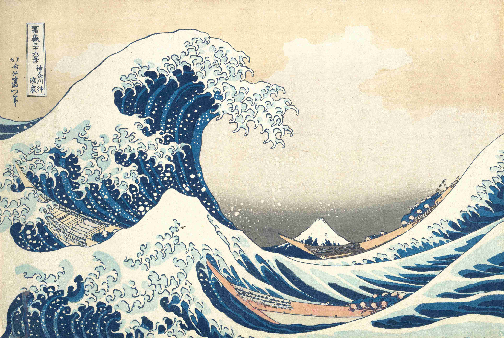

+ date = '2021-07-28T23:56:38+08:00' slug =
'how-hokusais-great-wave-emerged-from-japans-isolation-to-become-a-global-icon'
tags = ['阅读'] title =
'葛饰北斋的大浪潮是如何从日本的孤立中崛起成为全球的标志' +
How Hokusai's Great Wave emerged from Japan's isolation to become a global icon
浮（世）绘

Figure 1: The Great Wave
《神奈川沖浪里》（又称《大浪潮》），由葛饰北斋（1760-1849）于大约 1830 年画出，从那时以来这幅画一直受到欢迎。在此后的几十年里，这件作品已经成为一种全球现象，复制品在世界上随处可见，并沿着许多郊区起居室的墙壁排列。英国艺术作家詹姆斯·佩恩从他的 YouTube 系列视频《解释伟大的艺术》中选取了葛饰北斋的这部杰作。而且，在他探索的过程中，这件作品的广泛受欢迎有些恰到好处，因为当时雕版印刷是一种高度商业化的日本艺术形式，随着时间的推移，这件作品成为了日本孤立主义江户时代（1603-1867）结束的象征。
佩恩从艺术史的角度审视葛饰北斋的生平、时代和作品，尖锐地分析了为什么《大浪潮》在艺术和商业上获得如此巨大的成功。
ref:
https://aeon.co/videos/how-hokusais-great-wave-emerged-from-japans-isolation-to-become-a-global-icon